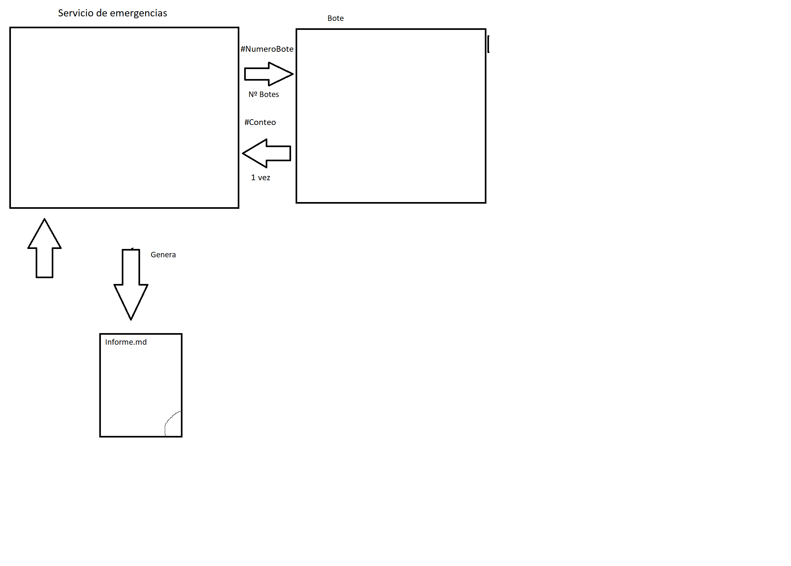

Miembros del grupo: Aitor Rebato, Erik De La Cruz
Se pide implementar un programa que genere un documento sobre la cantidad de personas en cada bote.
Cada bote tiene una cantidad de personas que debe ser anotado de manera individual, dividido entre mujeres, varones, niños y el total.
Hay 20 botes en total, cada uno con un identificador distindo.
No se tendrá en cuenta si la cantidad de personas en los botes coinciden con las que estaban a bordo en el barco.
Los botes tardan de 2 a 6 segundos en contar las personas que contienen.
El programa tendrá que ver las personas que hay en cada bote y generar el informe con los datos de cada uno de ellos.
Explicación: Necesitamos un programa principal que gestione los botes, los lance, reciba la información y escriba el informe, los botes son gestionados de manera individual y tienen que recibir el número de bote que les corresponda.
Funcionamiento:
El tiempo de espera será el tiempo del bote que mas tardó en ejecutarse.

Servicio de emergencia: Recibe internamente la lista de los botes para tenerla en un array y los lleva al metodo enviarBote(), cuando todos los botes están enviados hace la función leerBote() para obtener un listado de las personas de todos los botes, finalmente manda esta información a generarInforme() para generar el informe.
Ejecuter: Es una interfaz que recibe un comando de enviarBote y lo ejecuta de manera asíncrona, en este caso lanza bote y recibe su información para enviarla a leerBote().
Bote: Es ejecutado la cantidad de botes que tenga el barco, tiene una función que le asigna un numero de personas sin pasarse de la cantidad maxima en este caso 100 asignarNumeroPersona() , y devuelve el numero de personas que hay.
PersonasBote: Envía los datos desde Bote al Servicio de emergencias para una lectura más fácil.
UniversalWriter: Se ejecuta desde generarInforme() para crear el informe.md final donde esta escrita la cantidad de personas en cada bote.
- Contiene su lista de botes
- Envia botes al mar
- Lee los resultados en conjunto
- Crea los datos del informe y lo genera
- Recibe un numero de bote
- Crea el proceso de bote
- Devuelve el proceso
- Llama a Ejecuter
- Le pasan un proceso de tipo Ejecuter
- Lee el proceso (Si no ha terminado Ejecuter espera a que termine)
- Devuelve el resultado del proceso en un string
- Contiene toda la información del bote en una sola linea separada por espacios con el formato [Numero Bote] [Total] [Mujeres] [Hombres] [Niños]
- Recibe los datos de todos los botes
- Crea la lista con los datos de los botes
- Genera el informe
- Asigna un número de personas repartidos entre hombres, mujeres y niños
- Hace el conteo de todas las personas
- Envía cuantas personas tiene de cada tipo en el bote y su total al servicio de emergencia
- Se tiene que asignar un número no superior a 100 personas máximas en el bote
- Se envía por la salida estandar los datos de las personas
- Manda 5 parámetros, con el orden: [ID] [Total] [Mujeres] [Hombres] [Niños] separados por espacio en una sola linea
- PersonasBote recibe desde Bote un String con los datos de las personas que contienen
- PersonasBote es llamado por ServicioEmergencias para que le indique que valor le corresponde a cada número del String enviado por Botes
Bote enviará la información a través de un System.out.print para poder leer la salida estandar del proceso, y lo mandara con un formato ([ID] [Total] [Número de Mujeres] [Número de varones] [Número de niños]) separados con un espacio en una sola linea para su procesamiento en generarInforme().
PersonasBote es una clase de apoyo para tener los datos agrupados que acepta el String que sale de Bote.
Usaremos JUNIT para esta parte y probaremos:
Bote: Se ejecutará varias veces y no deberá traer un valor total de personas mayor a 100, se probarán los datos de entrada y que saque el conteo de personas bien.
PersonasBote: Se probará que funciona bien los distintos métodos de pasar los datos.
Ejecuter: le mandaremos un programa que ejecute y probar que getSalida() lea bien.
UniversalWriter: Le pondremos a generar un informe y verlo que salga bien.
ServicioDeEmergencias: Se comprobarán los datos de los botes que reciba para comprobar que genera el informe final correctamente.
Para ejecutar el programa se debe lanzar ServicioEmergencias.java, y esperar a que en /informe salga el informe.md.
Si se quiere cambiar la cantidad maxima de personas en cada bote puede meterse en Botes.java y cambiar el valor del atributo PERSONAS_MAXIMAS.
Si se desea modificar la cantidad maxima de botes lanzados, se tiene que ir a ServicioEmergencias.java y cambiar el valor del atributo NUMERO_BOTES (El valor de botes no puede superar 99).
A la hora de recibir los datos de los botes se ha conseguido que el tiempo de espera mínimo sería 6 segundos en el peor de los casos.
En la parte de ServicioEmergencias.java falta implementar una función para evitar repetir código que no estaba contemplada en el diseño, habría que implementarla.
A la hora de probar el programa Botes.java para su funcionamiento, un problema que se nos presentó fue que para pasar los datos se usó System.out.println en lugar de System.out.print, lo que generaba un salto de linea no deseado impidiendo el correcto funcionamiento del programa.
Esta práctica me ha hecho aprender de la importancia de la herramienta Github para compartir el proyecto con mi compañero y gestionar el control de ramas y versiones de nuestro proyecto, pudiendo realizarlo cómodamente
En esta practica he aprendido mucho sobre el diseño y lo importante que es a la hora de hacer proyectos, sobre todo los grupales, ya que si falla algo en el diseño falla a la hora de codificar y eso genera muchos problemas, aun así el diseño aun no esta pulido, hay que reforzarlo.
https://docs.oracle.com/javase/8/docs/api/
https://www.w3schools.com/java/
Repositorio github: https://github.com/Gusiprox/gestortitanic.git